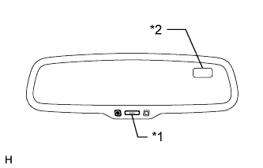

INNER REAR VIEW MIRROR > CALIBRATION |
| SELECT COMPASS DISPLAY MODE |
|  |
The AUTO switch allows selection of the compass display.
| SET ZONE |
The compass indicates the direction that the vehicle is heading by detecting the direction and strength of the earth's magnetic field (magnetic north). However, there is a difference between magnetic north and actual north that depends on the location of the vehicle. To compensate for this difference, it is necessary to set the zone in which the vehicle will be used (refer to Compass Zone Map). The zone setting can be changed using the AUTO switch of the inner mirror.
| *1 | AUTO Switch |
| *2 | Compass Display |
| PERFORM CALIBRATION |
Because each vehicle has its own magnetic field, calibration should be performed. The calibration function is used to compensate for the residual magnetism of the vehicle.
| WHEN COMPASS IS MAGNETIZED |
The compass or vehicle may become magnetized while the vehicle is being shipped. As a result, it is necessary to perform calibration for the compass before the vehicle is delivered to the customer. If calibration cannot be performed successfully (calibration cannot be completed in spite of driving around several times), it may be caused by excessive magnetization of the vehicle. Demagnetize the vehicle using a demagnetizer and perform calibration again.
| SET COMPASS |
| ZONE SETTING MODE |
When the compass is in normal mode, pressing the AUTO switch for 6 seconds activates the zone setting mode. A number from 1 to 15 is displayed on the compass display.
The displayed number increases by 1 every time the AUTO switch is pressed. Referring to the compass zone map, check the number for the area where the vehicle will be used and set the zone number.
Do not touch the AUTO switch for several seconds after setting the zone. Check that the compass display shows a direction (N, NE, E, SE, S, SW, W or NW).
| CALIBRATION MODE |
When the compass is in normal mode, pressing the AUTO switch for 9 seconds activates calibration mode.
Drive the vehicle in a circle at a speed of 8 km/h (5 mph) or less.
After driving around in a circle 1 to 3 times, the direction (N, NE, E, SE, S, SW, W or NW) is displayed on the compass display. This indicates that calibration has finished.